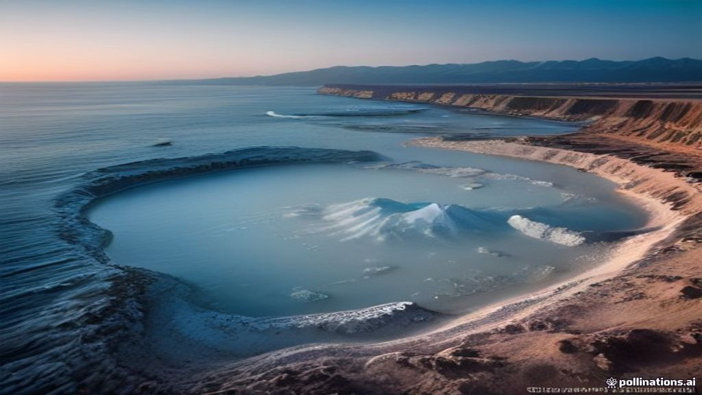
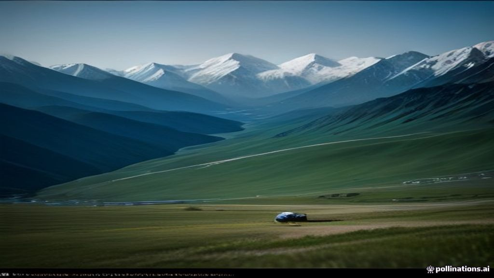
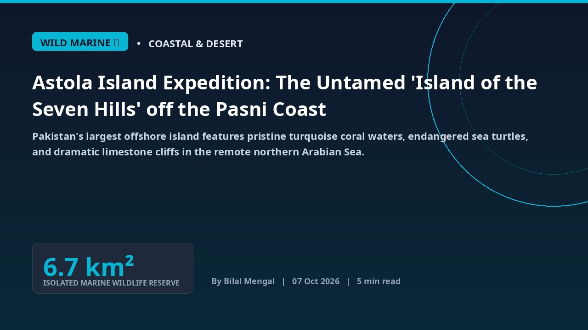
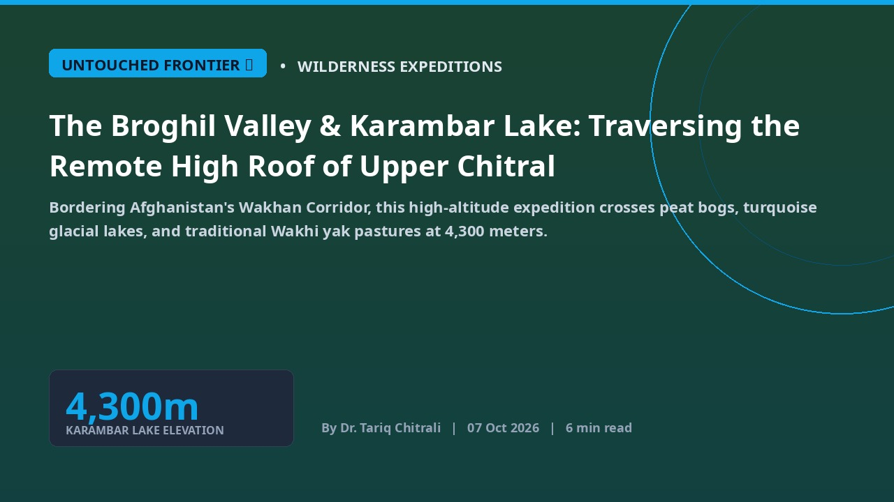
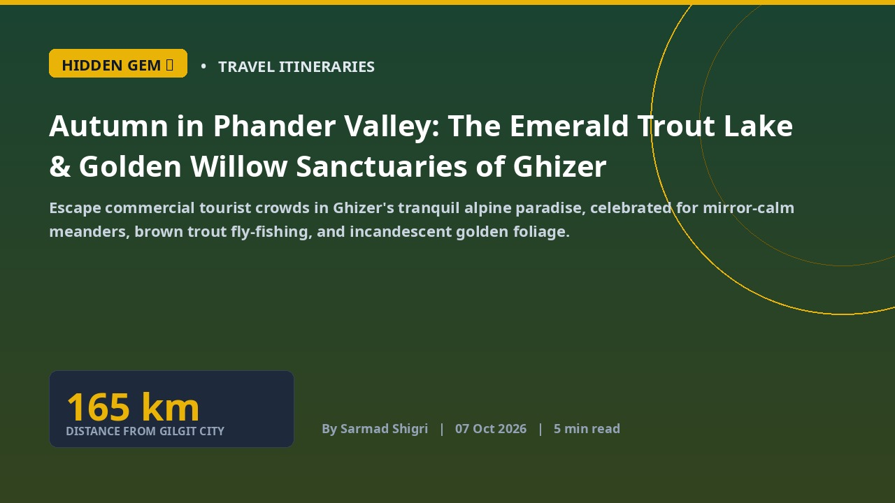

Latest


Autumn Foliage Season in Upper Chitral and Kalash: Travel Logistics, Route Conditions, and Cultural Festival Guide
Comprehensive expedition handbook for navigating golden apricot valleys, newly paved Lowari tunnel highway links, and the ancient Choimus winter festivals of the Hindu Kush.

Autumn in Hunza and Nagar: The Golden Apricot Foliage Circuit and Ultar Sar Glacier Trek
A comprehensive photographic dossier through Karimabad, Altit Fort, and the golden terraced valleys beneath Rakaposhi as autumn sweeps northern Pakistan.

The Makran Coastal Odyssey: Mud Volcanoes, Princess of Hope, and Astola Island Marine Waters
Navigating 653 kilometers of lunar sandstone canyons, Hingol National Park wildlife reserves, and pristine turquoise waters along Pakistan southern shoreline.
Solar-Powered Boutique Hospitality Across Hunza and Gilgit: Safeguarding Pristine Mountain Eco-Sanctuaries
High-altitude boutique lodges adopt rooftop solar micro-grids and geothermal insulation, keeping northern hospitality open during winter cold.
 EXPEDITION ROAD 🛣️
EXPEDITION ROAD 🛣️
The New 66-km Astore to Skardu Alpine Highway: Revolutionizing Overland Access to Deosai Plains
Newly completed strategic mountain road bypasses rugged river gorges, slashing transit times and unlocking unprecedented autumn tourism circuits.

BREAKING WIRE ⚡Pakistan's Green Horizon: EVs Chart a New Course Amidst Fuel Crisis
As geopolitical strife sends global oil prices soaring, Pakistan is making a strategic pivot towards electric vehicles (EVs) and solar energy, aiming to mitigate economic strain and build a sustainable future.
 ALPINIST ICON 🏔️
ALPINIST ICON 🏔️
K2 Base Camp & Concordia: The Ultimate Trekking Dossier Across the Baltoro Glacier
A definitive 14-day expedition guide across the 63km Baltoro glacier to the 'Throne of the Mountain Gods' at Concordia, facing K2, Broad Peak, and Gasherbrum.
Shigar & Khaplu: Ancient Wooden Palaces, Royal Gardens & Balti Heritage Along the Indus
Exploring the 400-year-old restored Raja palaces of Baltistan, where Tibetan Buddhist woodwork, Kashmiri lattice screens, and Persian royal gardens coalesce.

WILD MARINE 🌊Astola Island Expedition: The Untamed 'Island of the Seven Hills' off the Pasni Coast
Pakistan's largest offshore island features pristine turquoise coral waters, endangered sea turtles, and dramatic limestone cliffs in the remote northern Arabian Sea.

UNTOUCHED FRONTIER 🏕️The Broghil Valley & Karambar Lake: Traversing the Remote High Roof of Upper Chitral
Bordering Afghanistan's Wakhan Corridor, this high-altitude expedition crosses peat bogs, turquoise glacial lakes, and traditional Wakhi yak pastures at 4,300 meters.

HIDDEN GEM 🍂Autumn in Phander Valley: The Emerald Trout Lake & Golden Willow Sanctuaries of Ghizer
Escape commercial tourist crowds in Ghizer's tranquil alpine paradise, celebrated for mirror-calm meanders, brown trout fly-fishing, and incandescent golden foliage.
 سفری شاہکار 🍂
سفری شاہکار 🍂
ہنزہ اور وادی نگر کا سنہری خزاں: راکاپوشی، التیت اور بلتت قلعے کا مکمل سفرنامہ
اکتوبر اور نومبر میں وادی ہنزہ کے خوبانی اور چنار کے درخت سونے کی طرح چمک اٹھتے ہیں—شمالی علاقہ جات کی سب سے سحر انگیز موسمی مہم۔
 قراقرم مہم 🏔️
قراقرم مہم 🏔️
سکردو، شنگریلا اور خپلو محل: بلتستان کے صحرا اور برفانی جھیلوں کی دنیا
کے ٹو کا گیٹ وے، کٹپانہ کا سرد صحرا اور نیلگوں جھیلیں—بلتستان کے سحر انگیز عجائبات کی تفصیلی سفری دستاویز۔
 دیو مالائی خطہ 🐻
دیو مالائی خطہ 🐻
دیوسائی نیشنل پارک: دنیا کے بلند ترین میدان کی پراسرار خوبصورتی اور شیوسر جھیل
سطح سمندر سے 4000 میٹر بلند دنیا کی چھت پر نایاب ہمالیائی بھورے ریچھ، نیلگوں جھیلیں اور جنگلی پھولوں کا سمندر۔
 خیبر پختونخوا 🌲
خیبر پختونخوا 🌲
کمرات ویلی اور جہاز بانڈہ کٹورا جھیل: خیبر پختونخوا کا پوشیدہ قدرتی شاہکار
دریائے پنجکوڑہ کا شفاف پانی، دیودار کے صدیوں پرانے گھنے جنگلات اور 11,500 فٹ پر واقع کٹورا جھیل کا ٹریک۔
 قراقرم ہائی وے 🌉
قراقرم ہائی وے 🌉
پاسُو کونز اور حسینی پل: شاہراہ قراقرم کا سحر انگیز ایڈونچر اور وادی گوجال
کیٹھیڈرل کی طرح ایستادہ نوکیلی چوٹیاں، لکڑی کا لٹکتا ہوا خطرناک حسینی پل اور بورتھ جھیل کے دلفریب مناظر۔
 الپائن ٹریک 🏔️
الپائن ٹریک 🏔️
فیری میڈوز اور نانگا پربت: قاتل پہاڑ کے سائے میں کوہ پیمائی اور ایڈونچر کا خواب
رائے کوٹ پل کی اعصاب شکن جیپ رائیڈ، صنوبر کے جنگلات اور نانگا پربت (8,126 میٹر) کی دیو ہیکل شمالی دیوار کا سحر۔
 EXPEDITION DOSSIER
EXPEDITION DOSSIER
Hunza Valley Autumn Dossier: Golden Poplars, Rakaposhi & Silk Road Forts
When October arrives, the terraced orchards of Upper and Central Hunza erupt into fiery shades of amber, gold, and crimson against snow-capped giants.
 K2 GATEWAY
K2 GATEWAY
Skardu & Shangrila: Gateway to the High Karakoram & Cold Desert Dunes
From the turquoise mirror of Lower Kachura Lake to the snow-dusted dunes of Katpana, Skardu bridges alpine wilderness and high-altitude desert.
 ALPINE PLATEAU
ALPINE PLATEAU
Deosai National Park: The 4,000m Alpine Plateau of the Himalayan Brown Bear
A rolling expanse of glacial streams, wild alpine flora, and the crystalline mirror of Sheosar Lake set across Asia’s highest wildlife plateau.
 GLACIAL LAKES
GLACIAL LAKES
Passu Cones & Attabad Lake: The Turquoise Marvel of Upper Hunza
Carved by ancient glaciers and seismic shifts, Upper Hunza reveals the Cathedral Peaks of Passu and the turquoise waters of Attabad.
 VALLEY EXPLORATION
VALLEY EXPLORATION
Kumrat Valley & Panjkora Cascades: Khyber Pakhtunkhwa’s Pine Wilderness
Towering Deodar canopies, roaring crystal streams, and remote shepherd trails make Kumrat the ultimate wilderness escape.
 LIVING HERITAGE
LIVING HERITAGE
Kalash Valleys: Ancient Polytheistic Heritage in the Rugged Hindu Kush
Surrounded by the cedar slopes of Chitral, the indigenous Kalash people preserve centuries of animist rituals, music, and embroidery.
 COASTAL HIGHWAY
COASTAL HIGHWAY
Makran Coastal Highway: The Mud Volcanoes & Golden Shores of Balochistan
Winding 653 kilometers along the Arabian Sea, N-10 reveals the Princess of Hope, the Sphinx of Balochistan, and secluded beaches.